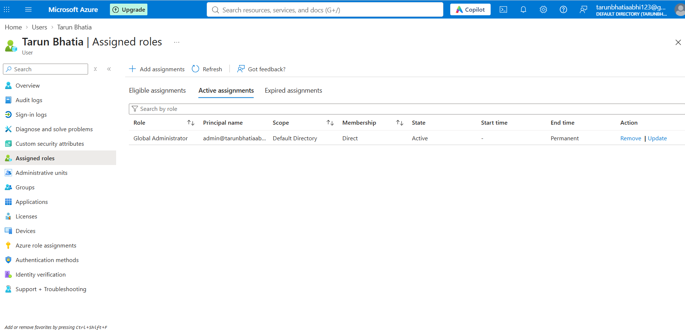
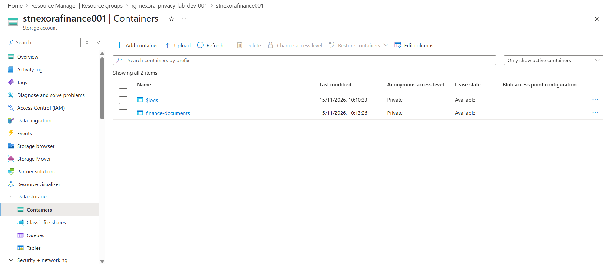
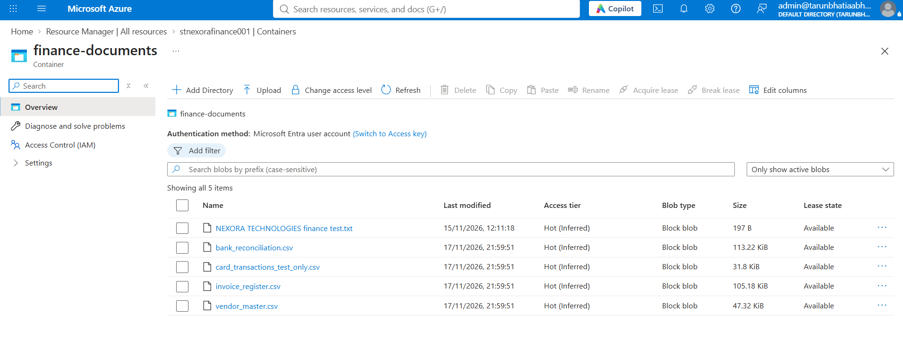
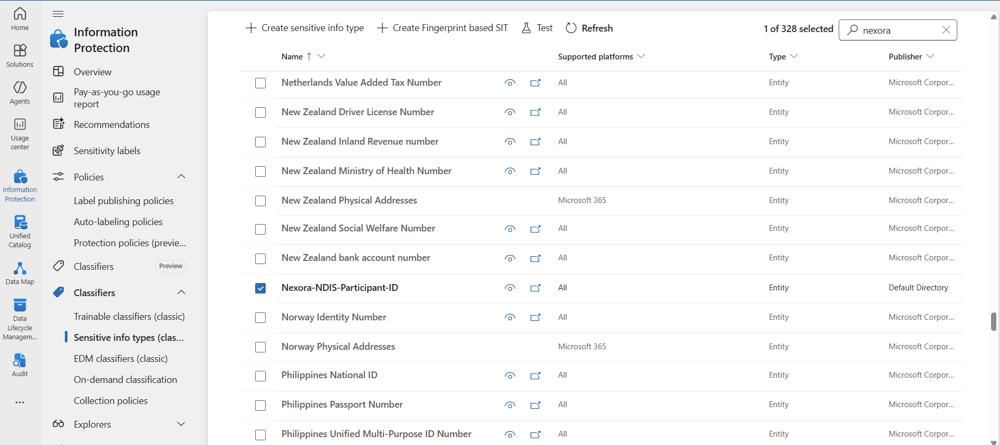
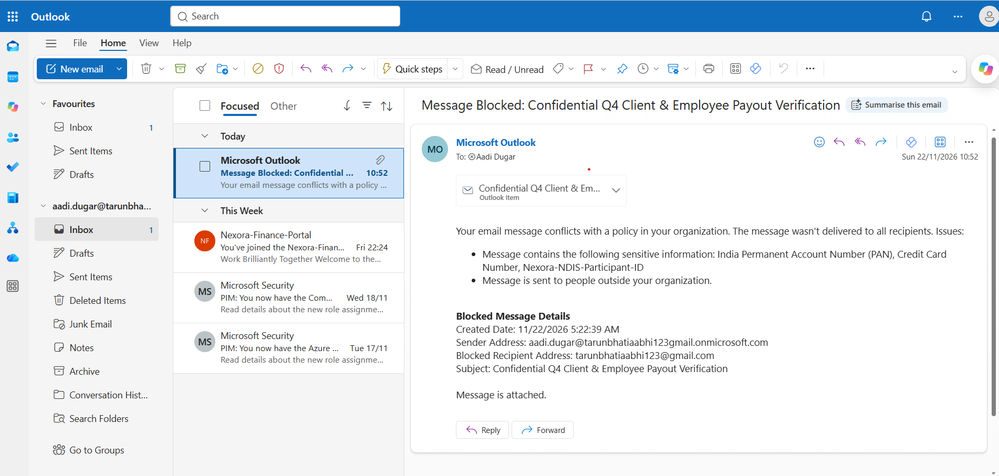

1. Executive Overview: Translating Law into Technical Controls
In modern cloud computing, the traditional divide between legal compliance and systems engineering represents an existential operational risk. Legal departments author static policy manuals, Data Protection Impact Assessments (DPIAs), and acceptable use memos. Meanwhile, engineering teams deploy microservices, provision cloud storage accounts, and integrate Generative AI assistants in rapid CI/CD cycles.
When a software engineer accidentally configures an Azure Blob container with anonymous read access, or an analyst pastes confidential vendor bank details into an ungrounded AI chat interface, static policies offer zero resistance. The breach occurs at the packet level; compliance must therefore be enforced at the cloud control plane.
To validate this architecture in a structured hands-on setting, I established Nexora Consulting—a simulated Indian B2B FinTech and Healthcare Advisory enterprise modelled across dual technology hubs in Gurugram and Bengaluru.
Nexora Consulting operates across five specialized functional units: Finance & Treasury, Human Resources, Legal & Compliance, IT Security Operations, and Healthcare Advisory Services. Within this simulated lab environment, the cloud architecture processes two high-risk categories of synthetic test data:
- Synthetic Indian Employee & Corporate Vendor Financial Records: Synthetically generated Permanent Account Numbers (PAN), corporate bank account numbers, tax identification sheets, and invoice reconciliation registers staged across private Azure Data Lake storage.
- Synthetic Healthcare Client & Patient Identifiers: Structured patient support coordination plans and synthetic clinical identification records modelled against domestic healthcare privacy considerations and client confidentiality agreements.
ℹ️ Test Environment Disclosure: Nexora Consulting is a hands-on enterprise privacy and data governance simulation lab. All corporate records, employee identities, vendor accounts, PAN numbers, banking details, card numbers, and patient IDs referenced in this case study are synthetic test datasets engineered exclusively for technical validation.
2. Regulatory Framework, Commencement & Threat Model
Engineering defensible cloud controls requires grounding every configuration in authoritative statutory provisions rather than high-level legal summaries. The technical architecture of Nexora Consulting maps directly against three intersecting regulatory and security frameworks:
2.1 Regulatory Commencement & Implementation Status (as of November 2026)
A rigorous techno-legal case study must clearly distinguish between provisions currently in force and forthcoming statutory obligations. India's Digital Personal Data Protection Act, 2023 follows a phased statutory commencement framework established by the Ministry of Electronics and Information Technology (MeitY) through official Gazette notifications:
MeitY Notification G.S.R. 843(E) — DPDP Act Phased Commencement Timeline
- 13 November 2025 (Immediate Commencement): Institutional provisions bringing into force Section 1(2), Section 2 (Definitions), Sections 18–26 (Establishment, composition, terms, and proceedings of the Data Protection Board of India), Section 35 (Power to call for information), Sections 38–43 (Penalties adjudication, recovery, and appeals to TDSAT), and Sections 44(1) & 44(3).
- 13 November 2026 (One-Year Commencement): Section 6(9) (Registration of Consent Managers with the Board and conditions of engagement) and Section 27(1)(d) (Power of the Board to inquire into breach of any condition of registration of a Consent Manager).
- 13 May 2027 (Eighteen-Month Commencement): Substantive operational mandates taking effect, including Sections 3–5 (Application, Grounds for processing, Notice), Sections 6(1)–6(8) & 6(10) (Substantive Consent requirements and withdrawal; Section 6(10) establishing that the Data Fiduciary bears the burden of proving notice and consent), Sections 7–17 (Certain legitimate uses, general obligations of Data Fiduciaries, Significant Data Fiduciary duties, Data Principal rights of access, correction, erasure, grievance redressal, and nomination), Section 27(2) (Board general direction-making power) and remainder of Section 27, Sections 28–34, Sections 36–37, and Section 44(2).
MeitY Notification G.S.R. 846(E) — DPDP Rules, 2025 Phased Implementation
- 13 November 2025: Rules 1–2 (Title and definitions) and Rules 17–21 (Board operational guidelines, salary, and terms).
- 13 November 2026: Rule 4 (Registration, technical architecture, and obligations of Consent Managers).
- 13 May 2027: Rule 3 (Notice requirements), Rules 5–16 (Consent procedure, reasonable security safeguards under Rule 6, personal data breach intimation under Rule 7, data erasure notices under Rule 8, Significant Data Fiduciary obligations under Rules 9–13, Data Principal rights procedure under Rule 14, grievance redressal under Rule 15), and Rules 22–23.
Forward-Looking Readiness Positioning: Because the substantive operational mandates—including Section 8(5) technical safeguards, Rule 6 security standards, Section 11 access rights, and Section 12 erasure workflows—are scheduled to commence on 13 May 2027, Nexora Consulting is positioned as a forward-looking enterprise readiness lab. The implementation demonstrates how an enterprise cloud environment can be engineered and verified today to satisfy statutory obligations well before their formal legal commencement.
2.2 Authoritative Statutory Section Mapping
To ensure interview defensibility, statutory terms are strictly mapped to their actual legislative text under the DPDP Act 2023:
| Statutory Provision | Legislative Subject | Core Statutory Standard & Scope | Nexora Technical Control Counterpart |
|---|---|---|---|
| Section 4 | Lawful Grounds for Processing | Personal data may be processed only for a lawful purpose for which the Data Principal gave consent under Section 6, or for certain legitimate uses under Section 7. | Entra ID directory role boundaries, container-scoped access policies, and legal-basis assessment. |
| Section 5 | Notice Requirements | Data Fiduciary must give itemised notice before or at the time of requesting consent, specifying data categories, purpose, rights exercise, and contact details of the DPO or authorized person for queries. | Simulated consent notices informing users prior to cloud onboarding. |
| Section 6 | Consent Requirements & Burden of Proof | Consent must be free, specific, informed, unconditional, and unambiguous with clear affirmative action, limited to necessary personal data; withdrawal mechanism as easy as giving consent. Data Fiduciary bears the burden of proof under Sec 6(10). | Simulated consent management tracking and affirmative user acknowledgement workflows. |
| Section 7 | Certain Legitimate Uses | Specified statutory grounds for processing without explicit Section 6 consent (e.g. voluntary data provision under Sec 7(a), employment, legal duties). | Vendor onboarding and settlement records voluntarily provided by sole proprietors for commercial fulfillment. |
| Section 8(2) | Processor Engagement | A Data Fiduciary may engage, appoint, use or involve a Data Processor only under a valid contract. | Cloud Service Provider (CSP) enterprise agreements and sub-processor governance framework. |
| Section 8(5) & Rule 6 | Reasonable Security Safeguards | Affirmative legal duty to protect personal data by implementing reasonable security safeguards to prevent personal data breaches. Schedule specifies penalty up to ₹250 Cr statutory max. | Entra PIM JIT elevation, 12 security groups, two-tier storage IAM, and live Exchange DLP exfiltration blocking. |
| Section 8(6) & Rule 7 | Breach Intimation | Duty to intimate the Data Protection Board and affected Data Principals in the event of a personal data breach (initial notice without delay; detailed report within 72 hours). | Audit-triggered incident response pipeline backed by Microsoft 365 Unified Audit Logs. |
| Section 8(7) & Rule 8 | Data Erasure | Duty to erase personal data upon withdrawal of consent or when purpose is no longer served, unless retention is required under applicable law. | Purview data retention policies and Section 12 lifecycle evaluation. |
| Section 10 | Significant Data Fiduciary (SDF) | Additional obligations (DPO based in India, independent data auditor, periodic DPIAs) apply only when an entity is notified by the Central Government. | Simulated Privacy Lead / DPO-style role (Aadi Dugar) demonstrating governance practices without claiming formal SDF notification. |
| Section 11 & Section 12 | Data Principal Rights to Information & Correction/Erasure | Section 11: Right to obtain summary of personal data and processing activities, identities of all other Data Fiduciaries and Data Processors with whom personal data was shared, and description of data shared. Section 12: Right to correction, completion, updating, and erasure subject to legal retention. | Purview eDiscovery Premium targeted query, third-party PII redaction evaluation, and 4-file process report export. |
| Section 16 | International Transfers | Restricted-transfer framework empowering the Central Government to restrict transfers to notified countries or territories. | Regional Azure resource placement in Central India with operational evaluation of metadata and subprocessor routes. |
Distinction: Personal Data vs. Internal Business Tiers: The DPDP Act, 2023 regulates Personal Data generally (defined in Section 2(t) as any data about an individual who is identifiable by or in relation to such data) and does not establish a statutory "sensitive personal data" tier analogous to GDPR Article 9. Nexora's classification label Confidential - PII and Financial represents an internal business risk classification designed to apply defense-in-depth controls to high-impact financial and identity fields, rather than a statutory label mandated by the Act.
2.3 International Standards: ISO/IEC 27001:2022, ISO/IEC 27701:2025 & PCI-DSS v4.0
In enterprise consulting, domestic statutory mandates must integrate with globally recognized security and privacy standards:
- ISO/IEC 27001:2022 (Information Security Management): The implementation maps to current 2022 Annex A controls: Control 5.3 (Segregation of duties), Control 5.15 (Access control), Control 5.18 (Access rights), Control 8.2 (Privileged access rights), Control 8.15 (Logging), and Control 8.16 (Monitoring activities). Note: Nexora demonstrates implementation of selected controls and does not claim formal ISO certification or conformity.
- ISO/IEC 27701:2025 (Privacy Information Management System - PIMS): Second edition published in October 2025, providing guidance on privacy governance, controller and processor responsibilities, records of processing activities (ROPA), privacy risk assessments, Data Principal rights fulfillment, and security incident response. Nexora adopts these structured practices across its simulated workflows.
- PCI-DSS v4.0 (Payment Card Industry Data Security Standard): Requirement 3 (Protect stored account data) and Requirement 7 (Restrict access to system components and cardholder data by business need-to-know). Nexora uses synthetic Primary Account Number (PAN) test records in isolated storage to validate classification and label protection; the lab does not process live cardholder data or constitute a validated PCI-DSS assessment.
3. Phase 1: Identity Governance & Just-In-Time Privilege Elevation
Identity serves as the primary security boundary of modern cloud computing. Under DPDP Act Section 8(5) and ISO/IEC 27001:2022 Control 8.2, maintaining standing administrative privileges for human operators introduces severe insider-threat exposure. If an administrator's account is compromised, an adversary inherits permanent access across all cloud repositories.
3.1 Workforce Directory Provisioning (26 Cloud Identities)
I provisioned 26 directory identities in Microsoft Entra ID, segregated across Nexora's operational units. Standard business analysts were completely isolated from privacy governance leadership and emergency recovery accounts.

3.2 Departmental Security Group Architecture (12 Groups)
To prevent permission creep, direct user assignments were strictly prohibited. I created 12 role-segmented Entra Security Groups (such as SG-NEX-All-Employees, SG-NEX-Finance, SG-NEX-HR, SG-NEX-IT-Security, and SG-NEX-Legal-Compliance). All downstream access policies—from Azure Storage IAM to Purview sensitivity labels—target these groups exclusively, satisfying ISO 27001 Control 5.3 (Segregation of duties).


3.3 Just-In-Time Privilege Elevation (Entra PIM)
For Nexora's designated Privacy Lead / simulated DPO (Aadi Dugar), standing administrative rights were revoked. Utilizing Microsoft Entra Privileged Identity Management (PIM), the compliance lead was configured with Eligible assignments for Information Protection Administrator and Compliance Administrator. Under routine conditions, the user operates with standard business permissions. When compliance policy intervention is required, the operator must activate the role via mandatory Multi-Factor Authentication (MFA), provide a documented business justification, and operate within a bounded time window.

3.4 Out-of-Band Break-Glass Administrative Isolation
Emergency recovery capabilities are essential for enterprise operational resilience. Rather than maintaining standing privileges on daily accounts, a dedicated break-glass account (Emergency-Admin-01) retains standing Global Administrator credentials. This account is strictly excluded from daily workflows, enrolled in FIDO2 hardware key authentication, and configured with automated audit alerts on any sign-in activity.

4. Phase 2: Regional Resource Placement, Two-Tier Storage IAM & KQL Audit
Under modern data protection frameworks, data sovereignty preferences and least-privilege infrastructure access are paramount. If an infrastructure engineer possesses storage-level read permissions, they could bypass departmental encryption and access raw salary registers or healthcare plans directly from cloud disk storage.
4.1 Central India Regional Resource Placement
All cloud resources for Nexora Consulting were provisioned within the Central India Azure region inside resource group rg-nexora-privacy-lab-dev-001.
⚠️ Data Sovereignty Qualification: Provisioning storage accounts in Central India satisfies regional resource placement. However, comprehensive data sovereignty under Section 16 of the DPDP Act and Indian sectoral guidelines requires evaluating service-specific processing locations, diagnostic/audit log retention, sub-processor locations, and CSP operational access commitments.

rg-nexora-privacy-lab-dev-001.

stnexorafinance001, stnexorahrdev001) and Purview account (purview-nexora-gov-001).
4.2 Two-Tier Storage IAM & Container Isolation
To prevent storage administrators from viewing confidential files, I implemented a strict two-tier hierarchical RBAC architecture:
- Storage Account Level (Management Plane): Operational groups hold only
Readerpermissions. This permits viewing storage metrics and diagnostic logs without granting data-plane permissions to download or read storage blobs. - Container Level (Data Plane): Granular permissions are assigned at the container boundary. On container
finance-documents,SG-NEX-FinanceholdsStorage Blob Data Contributorfor business uploads.SG-NEX-Privacy-Operationsand Purview's System-Assigned Managed Identity are restricted toStorage Blob Data Reader. Crucially,SG-NEX-HRhas zero assignments on the Finance container, segregating departmental access.

purview-nexora-gov-001 to prevent unauthorized policy tampering.

stnexorafinance001.

finance-documents.
4.3 KQL Resource Graph Audit: All 11 Verified Role Assignments
In enterprise compliance audits, manually clicking through Azure portal blades is inefficient and prone to human oversight. To standardize least-privilege verification, I used an AI-assisted workflow to construct and validate a Kusto Query Language (KQL) audit query in Azure Resource Graph Explorer. In a single execution, it pulls every role assignment across Subscription, Resource Group, Storage Account, and Container levels into one normalized, auditable table.
authorizationresources
| where type == "microsoft.authorization/roleassignments"
| extend principalId = tostring(properties.principalId),
principalType = tostring(properties.principalType),
roleDefinitionId = tostring(properties.roleDefinitionId),
scope = tostring(properties.scope)
| join kind=leftouter (
authorizationresources
| where type == "microsoft.authorization/roledefinitions"
| extend roleDefinitionId = id,
roleName = tostring(properties.roleName)
) on roleDefinitionId
| project scope, principalId, principalType, roleName
| order by scope ascAzure RBAC Assignment Inventory (Cross-Referenced with Entra ID Directory)
| Scope Level | Resolved Identity / Group | Assigned Azure RBAC Role | Zero-Trust Security & Legal Purpose |
|---|---|---|---|
| Subscription | Tarun Bhatia (Break-Glass Owner) | Owner | Subscription governance and emergency recovery only. |
| Resource Group | purview-nexora-gov-001 (MSI) | Storage Blob Data Reader | Keyless automated PII classification across all data lakes. |
| Resource Group | Tenant Administrator | Reader | Management plane visibility; zero data-plane access. |
| Storage (Finance) | SG-NEX-Finance | Reader | Storage account telemetry; cannot download blobs. |
| Storage (Finance) | SG-NEX-Privacy-Operations | Reader | Storage account telemetry; cannot download blobs. |
| Container (finance-docs) | SG-NEX-Privacy-Operations | Storage Blob Data Reader | Read-only compliance audit inspection; cannot modify. |
| Container (finance-docs) | SG-NEX-Finance | Storage Blob Data Contributor | Write/upload rights isolated strictly to Finance container. |
| Storage (HR) | SG-NEX-Privacy-Operations | Reader | HR account telemetry; cannot download blobs. |
| Storage (HR) | SG-NEX-HR | Reader | HR account telemetry; cannot download blobs. |
| Container (hr-docs) | SG-NEX-Privacy-Operations | Storage Blob Data Reader | Read-only compliance audit inspection on employee files. |
| Container (hr-docs) | SG-NEX-HR | Storage Blob Data Contributor | Write/upload rights isolated to HR; zero access to Finance. |

5. Phase 3: Automated Data Discovery & Classification in Azure Data Lake
Organizations cannot protect personal data they have not discovered. In high-growth enterprises, departments upload vendor spreadsheets, tax filings, and bank reconciliation statements daily. Static data inventories go stale within weeks.
In this architecture, Microsoft Purview Data Map operates as the discovery, metadata management, and classification layer:
| Platform Layer | Primary Architectural Function | Boundary & Relationship to Other Controls |
|---|---|---|
| Purview Data Map | Metadata discovery, automated scanning, column-level classification | Discovers and catalogs data; does not encrypt raw blob objects or independently enforce DLP. |
| Microsoft Information Protection | Document-level sensitivity labelling and RMS encryption | Protects supported files and documents across endpoints and M365 apps. |
| Purview DLP | Detection and interception of specified data movement | Enforces policy rules at Exchange transport, SharePoint sharing, and Copilot prompts. |
| Purview eDiscovery (Premium) | Investigation, search, review set tagging, and audit evidence export | Operates across indexed M365 repositories to fulfill Data Principal access requests. |
| Azure Storage IAM | Cloud resource and storage container access permissions | Governs Azure management plane and data plane (Blob Data Contributor/Reader). |
5.1 Private Storage Lockdown & Staging Synthetic Test Datasets
Anonymous public access was permanently disabled on container finance-documents. I staged four realistic corporate datasets simulating Nexora's B2B operations: bank_reconciliation.csv, card_transactions_test_only.csv, invoice_register.csv, and vendor_master.csv.


5.2 Keyless Purview Managed Identity Registration
Hardcoded access keys and Shared Access Signatures (SAS) represent a top vector of cloud exfiltration. Instead, I registered the Azure Blob Storage account inside Microsoft Purview Data Map utilizing Purview's System-Assigned Managed Identity (MSI) authenticated directly via Azure RBAC.

5.3 Automated Column-Level PAN Auto-Classification
Upon executing automated scanning, Purview cataloged all four CSV assets into the Purview Unified Catalog. The classification engine automatically inspected column contents, identified pattern matches for India Permanent Account Number (PAN) inside the Beneficiary_PAN_TEST column of bank_reconciliation.csv, and applied classification tags without manual intervention.


Beneficiary_PAN_TEST.
5.4 Microsoft Purview Data Governance — Implementation Context and Product Lifecycle (November 2026)
On 12 November 2026, Microsoft announced the retirement of classic Microsoft Purview Data Governance capabilities, with end of support scheduled for 12 November 2027:
- Retirement Scope & Direction: Microsoft has announced the retirement of classic Purview Data Governance (including Data Map and Unified Catalog), directing future enterprise data cataloging, lineage, and metadata governance initiatives toward Microsoft Fabric and OneLake Catalog.
- End of Support: End of support for classic Data Governance capabilities is scheduled for 12 November 2027.
- Data Security & Compliance Unaffected: The announced retirement applies strictly to Data Governance. Microsoft Purview Data Security and Compliance solutions—including Data Loss Prevention (DLP), Sensitivity Labels, Information Protection, and eDiscovery—are outside the scope of this retirement announcement and remain Microsoft's active core compliance platforms.
Hands-on Lab Evidence: In this portfolio environment, the classic Microsoft Purview Data Map experience remains accessible and operational within the author's tenant portal, allowing hands-on execution of storage registration, managed identity scanning, and automated schema classification as demonstrated in Figures 13–15. For future enterprise architectures, Microsoft Fabric and OneLake Catalog represent the recommended path.
6. Phase 4: Sensitivity Labels, Custom Regex Classifier & Live DLP Exfiltration Prevention
Data discovery without automated policy enforcement is incomplete. In this phase, I configured end-to-end preventative guardrails to prevent sensitive personal records from leaving Nexora's operational perimeter via email or unauthorized sharing channels.
6.1 Priority 9 Sensitivity Label Configuration
I engineered a sensitivity label: Confidential - PII and Financial at Priority 9 within the label hierarchy. In Microsoft Purview, Priority 9 establishes label precedence and conflict resolution rules when multiple policies match, ensuring high-risk labels take precedence over lower tiers. The label enforces document protection restricted to authenticated enterprise identities and requires user justification for downgrade events.


SG-NEX-All-Employees with audit logging.
6.2 Custom Healthcare Regex Classifier (NEX-PAT Pattern)
A common limitation of built-in compliance classifiers is that while they detect standard national IDs (like Indian PAN or credit cards), they do not detect proprietary healthcare identifiers. For Nexora's healthcare advisory branch, client patient records use a structured alphanumeric format: NEX-PAT-XXX-XXX-XXX.
To address this gap, I authored a custom Sensitive Information Type (SIT) utilizing regex pattern matching combined with semantic proximity keywords (such as Patient, Healthcare, Disability, Support Coordination) within 300 characters, creating a reliable regex-based detection demonstration:
Pattern: (?:NEX-PAT|NDIS)-\d{3}-\d{3}-\d{3}
Proximity: 300 characters
Keywords: Healthcare, Patient, Disability, Plan Manager, Support Coordination
Match Type: Regex pattern with semantic keyword corroboration
6.3 Auto-Labeling Policy Simulation
Deploying encryption policies directly into active workloads can disrupt business operations if false positives occur. I configured policy Nexora-AutoLabel-Confidential-PII in simulation mode across Exchange, SharePoint, and OneDrive, verifying rule matches against staged datasets before non-disruptive production activation.

6.4 LIVE PROOF: Real-Time Outlook Exfiltration Interception
With policies synchronized across the tenant, I conducted a live data exfiltration test. A simulated internal analyst drafted an outbound email to an external personal Gmail address, attaching synthetic Indian PAN numbers (ZZZPX5001J), credit card numbers (4111111111111111), and structured patient identifiers (NDIS-430-881-922).
The moment the user sent the email, Microsoft Purview DLP intercepted the transmission at the Exchange transport pipeline. The configured Exchange Online DLP policy generated a blocking notification during the test, displaying: "Message Blocked: Confidential Q4 Client & Employee Payout Verification". The observed outcome demonstrates the configured policy response; in production, definitive non-delivery is verified through Exchange message-trace logs.

Nexora-PII-Financial-Leak-Prevention.


7. Phase 5: Generative AI & Microsoft 365 Copilot Data Loss Prevention
Generative AI tools introduce novel shadow-exfiltration risks. While Section 6 of India's DPDP Act establishes substantive consent requirements, technical controls are necessary at the application layer to prevent unauthorized or unintended ingestion of personal data into generative AI models. If employees paste client PAN numbers or patient medical notes into AI chat assistants for summarization, sensitive data is exposed. Deploying prompt-level DLP provides an automated technical safeguard, operating as a data-security guardrail rather than statutory proof of consent compliance.
7.1 Dedicated Microsoft 365 Copilot DLP Architecture
To address this threat, I deployed policy Nexora-Copilot-PII-Protection configured for Microsoft 365 Copilot and Copilot Chat. Microsoft documents prompt-level sensitive-information blocking as a preview capability subject to tenant rollout considerations.
ℹ️ Scope & Technical Boundary: In this configuration, the DLP policy inspects the text entered directly into the Copilot chat prompt. Microsoft documentation notes that files uploaded directly into prompts are not scanned by this specific prompt DLP control, and sensitivity-labelled files are governed by separate document protection policies. The blocked prompt demonstrates a technical data-security control rather than proof of complete statutory compliance.

7.2 LIVE PROOF: Copilot Prompt Interception in Real-Time
To verify enforcement, I entered an operational prompt directly into Microsoft 365 Copilot Chat containing synthetic PAN, credit card, and patient identifiers. The Copilot DLP engine intercepted the payload instantly, halting processing and displaying an organizational security notice: "Your prompt contains sensitive information restricted by your organization's compliance policy."

8. Phase 6: Simulated Statutory DSAR Fulfillment, Third-Party Redaction & Audit Trail
Under Section 11 of India's DPDP Act 2023 (scheduled for substantive commencement on 13 May 2027), Data Principals possess the statutory right to request a summary of their personal data processed by the organization. However, enterprise records frequently store multiple individuals' information in unified spreadsheets. Fulfilling an access request by carelessly exporting raw files would breach third-party privacy.
8.1 Multi-Tenant SharePoint Financial Repository
I configured private SharePoint team site Nexora-Finance-Portal hosting vendor master registers and banking reconciliation records subject to access requests.

8.2 Scenario Clarification — Individual Sole-Proprietor Vendor (Option A Narrative Alignment)
In Figures 26–29, the eDiscovery query targets Demo Vendor 0002 Group. Within the synthetic Nexora case study scenario, this is modelled as follows:
- Data Principal:
Rajesh Verma, a fictional natural person operating an individual sole-proprietorship business. - Data Fiduciary: Nexora Consulting.
- Vendor Account Reference:
Demo Vendor 0002 Groupis the internal corporate vendor-account identifier assigned to Rajesh Verma's sole-proprietor business. - Personal Data Under Review: Synthetic individual PAN and proprietor-linked personal bank account details maintained for vendor onboarding, invoice reconciliation, and payment settlement.
- Statutory Grounds: Rajesh Verma voluntarily provided his personal data for vendor onboarding and payment settlement purposes without indicating non-consent (modelled against Section 7(a) legitimate uses).
- Query Purpose: The eDiscovery query uses the vendor account code as a search parameter to locate all correspondence, payment sheets, and records containing the natural person's personal data. The vendor code is a search tool, not the Data Principal itself.
8.3 Targeted eDiscovery Premium Case Creation
To fulfill simulated request DSAR-2026-001, I established a formal legal case in Microsoft Purview eDiscovery (Premium). Utilizing KQL search syntax targeting Demo Vendor 0002 Group across SharePoint and Exchange, the search query isolated exactly 3 matching files (272,103 bytes) while excluding non-responsive enterprise data.

DSAR-2026-001-Vendor-and-Employee-Access-Request as a future-state DPDP Act Section 11 readiness simulation.

DPDP Act Section 12 — Correction & Erasure Workflow Lifecycle
Beyond Section 11 access, Section 12 (effective 13 May 2027) establishes the Data Principal's right to correction, completion, updating, and erasure of personal data. In Nexora's operational architecture, this follows a structured seven-stage lifecycle:
Request → Identity Verification → Discovery → Legal/Retention Assessment → Approval → Execution (Correction/Erasure) → Audit Evidence
Under Section 12(3), personal data erasure is subject to statutory retention exceptions where retention remains necessary for the specified purpose or for compliance with any law in force.
8.4 Review Set Tagging & Third-Party Redaction Assessment
Upon ingesting the files into review set DSAR-2026-001-Review-Set, inspection revealed that vendor_master.csv contained banking and tax details belonging to unrelated third parties. Rather than releasing raw files, the records were flagged for disclosure assessment and tagged with Requires-Redaction, ensuring third-party identifiers are evaluated and masked prior to disclosure.

8.5 Sandboxed Reviewer RBAC & 4-File Process Evidence Export
To preserve evidence integrity, I assigned Purview Role Group Reviewer (backed by SG-NEX-Legal-Compliance) strictly to this single case. Assigning the Reviewer role group restricts analysts to reviewing and tagging within permitted cases; restricting export capabilities requires configuring specific eDiscovery export permissions and tenant role boundaries, which should be verified through independent permission testing.
Finally, I exported the official 4-file eDiscovery Process Report (Summary.csv, Locations.csv, Settings.csv, and Statistics.csv). These process reports document the specific search parameters, responsive item counts, and review-set export metadata; they operate alongside Microsoft 365 Unified Audit Logs, which separately record tenant-wide administrator actions and data access events.

9. Real-World Cloud Engineering & Troubleshooting Lessons
Deploying enterprise data governance across a live cloud tenant invariably encounters undocumented edge cases and API validation roadblocks. Below are the three key technical hurdles resolved during this implementation:
Lesson 1: Tenant Hydration & Audit Engine Activation via PowerShell V3
In newly provisioned Microsoft 365 enterprise tenants, Exchange Online and compliance configurations may be initialized in a quiescent or "dehydrated" state. When attempting to activate automated compliance features and unified audit logging via the graphical portal, the API generated InvalidOperationInDehydratedContextException and UnifiedAuditLogDisabledException.
Resolution: Utilizing an AI-assisted troubleshooting workflow, I identified and executed the necessary Exchange Online PowerShell V3 commands to force organization customization and explicitly enable unified audit logging:
# Install and import Exchange Online V3 module
Install-Module -Name ExchangeOnlineManagement -Force -AllowClobber
Connect-ExchangeOnline -UserPrincipalName admin@nexoraconsulting.onmicrosoft.com
# Activate tenant configuration from quiescent state
Enable-OrganizationCustomization
# Verify hydration state across regional endpoints
Get-OrganizationConfig | Select-Object IsDehydrated, Name
# Enable Microsoft 365 Unified Audit Log ingestion
Set-AdminAuditLogConfig -UnifiedAuditLogIngestionEnabled $trueLesson 2: Exchange DLP Validation API (InvalidBlockAccessActionException)
When configuring the outbound data exfiltration rule in Purview DLP, the Exchange transport pipeline rejected policy activation with InvalidBlockAccessActionException.
Resolution: In this tenant configuration, enabling the action "Block people outside your organization" required simultaneously activating "User notifications & Policy tips". This configuration ensures that users receive transparent contextual policy guidance at the exact point of risk rather than silent delivery drops.
Lesson 3: 3-Tier RBAC Separation of Duties Architecture
A common security antipattern is attempting to manage all permissions through Entra ID directory roles. Because directory roles carry global blast radiuses, I engineered a 3-tier separation-of-duties architecture:
- Entra PIM: Used strictly for individual, time-bounded JIT directory elevation.
- Azure Storage IAM: Hierarchical data-plane control isolating Finance and HR containers.
- Purview Role Groups: Case-scoped delegation restricting legal analysts to single DSAR investigations without global tenant visibility.
10. Additional Regulatory & Governance Context
A comprehensive enterprise privacy program extends beyond cloud console toggles. Below are four key governance dimensions addressed within Nexora's operational model:
10.1 Data Processor Governance (Section 8(2) & Rule 6(1)(f))
Under Section 8(2) of the DPDP Act, 2023, a Data Fiduciary may engage a Data Processor only under a valid contract. Rule 6(1)(f) further requires appropriate contractual provisions for reasonable security safeguards. In Nexora's cloud deployment, Microsoft acts as a Data Processor under Microsoft's Data Protection Addendum (DPA), establishing processing boundaries, sub-processor notification, and data return/deletion commitments.
10.2 Personal Data Breach Incident Response Lifecycle
Section 8(6) and Rule 7 establish a duty to intimate the Data Protection Board of India and affected Data Principals in the event of a personal data breach. The operational incident response pipeline follows six stages:
Detection → Containment → Investigation → Impact & Notification Assessment → Remediation → Evidence Preservation
Rule 7 specifies initial intimation to the Board without delay upon becoming aware of a breach, followed by detailed information within 72 hours, covering breach nature, affected data principal categories, severity, and mitigation measures. Note that blocked DLP exfiltration attempts demonstrate preventative controls, not actual breach events.
10.3 Significant Data Fiduciaries (Section 10)
Under Section 10, additional obligations—including an India-based Data Protection Officer (DPO), independent data auditor, periodic Data Protection Impact Assessments (DPIA), and audits—apply only to entities formally notified by the Central Government. Processing financial or healthcare records alone does not establish SDF status. Aadi Dugar's role demonstrates internal governance practices rather than an official statutory SDF designation.
10.4 Processing Inventories (RoPA) & Retention Framework
While the lab environment demonstrates column-level discovery in Azure Blob Storage, a complete enterprise Record of Processing Activities (RoPA) spans legal bases, transfer routes, and retention schedules across all enterprise systems. Under Rule 6(1)(e), the one-year retention requirement relates specifically to security logs and personal data for incident detection and investigation, and should not be confused with general business record retention under Section 8(7) and applicable statutory tax/corporate laws.
11. Limitations, Assumptions & Production Readiness
Professional credibility requires complete transparency regarding implementation scope, assumptions, and operational limitations:
- Simulated Lab Environment: Nexora Consulting is a simulated enterprise lab. All business datasets, employee profiles, vendor records, PAN numbers, banking details, card numbers, and patient IDs are synthetic test records.
- Demonstrated Controls vs. Legal Certification: The implementation demonstrates selected cloud controls and observed test results; it does not constitute legal advice, ISO certification, or a validated PCI-DSS assessment.
- Licensing & Feature Availability: Microsoft Purview and Entra ID features depend on specific licensing tiers (e.g. Microsoft 365 E5 / Compliance E5). Copilot DLP prompt inspection is subject to feature availability and tenant preview status.
- Purview Data Governance Lifecycle: Classic Purview Data Map capabilities are in maintenance through 12 November 2027 following Microsoft's announcement; future enterprise governance implementations should align with Microsoft Fabric and OneLake Catalog.
- RBAC Enumeration vs. Effective Access: The 11-row KQL inventory reports configured role assignments. Production audits must evaluate effective access including group nesting, Azure Policy assignments, and storage firewall rules.
- Document Protection vs. Storage Encryption: M365 sensitivity labels apply document-level rights management to supported office and PDF files; raw unstructured CSV files in Azure Blob storage rely on Azure Storage service-side encryption (SSE) and RBAC data-plane controls.
- eDiscovery Repository Boundaries: eDiscovery searches were executed against configured SharePoint and Exchange repositories and do not automatically cover unindexed external databases or third-party SaaS tools.
- Phased DPDP Commencement: Substantive obligations under Sections 6(1)–(8), 8(5), 11, and 12 take effect on 13 May 2027; Nexora demonstrates forward-looking readiness.
12. Conclusion & Architecture Summary
The Nexora Consulting implementation demonstrates that statutory privacy requirements under India's DPDP Act 2023, ISO/IEC 27001:2022, and PCI-DSS can be systematically translated into demonstrated technical controls and auditable implementation evidence.
By combining Entra PIM's Just-In-Time eligible elevation, Azure's two-tier hierarchical storage RBAC (audited via KQL), Purview's keyless data discovery, real-time Outlook and Copilot DLP guardrails, and case-sandboxed eDiscovery DSAR redaction, the architecture establishes a robust, defense-in-depth foundation for enterprise data governance.
Authoritative Legal & Technical References
- Digital Personal Data Protection Act, 2023 (Official Text) — India Code ↗
- MeitY Notification G.S.R. 843(E) — DPDP Act Phased Commencement (13 Nov 2025) ↗
- MeitY Notification G.S.R. 846(E) — DPDP Rules, 2025 (Official Gazette) ↗
- Microsoft Purview Data Map Documentation — Microsoft Learn ↗
- Microsoft Partner Center — November 2026 Product Announcements ↗
- Microsoft Purview DLP for Microsoft 365 Copilot — Microsoft Learn ↗
- ISO/IEC 27701:2025 (PIMS Requirements & Guidance) — ISO ↗
Connect with me at lawxtech.in or email tarun@lawxtech.in.